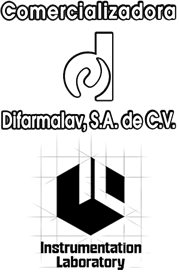
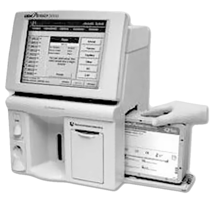

Gem premier 3000 equipo de gases

DESCRIPCIÓN:
Sistema analizador de pH, gases en sangre ( pO2, pCO2). Electrólitos (Na+, K+, Ca++) hematocrito, sustratos (glucosa, lactato) y parámetros calculados en sangre total en sólo dos minutos para evaluar el estado general del paciente.
CARACTERÍSTICAS:
• Amplio perfil de análisis con sólo una muestra de 150 ml, para la evaluación adecuada del paciente en sangre total con heparina de sodio o litio, en jeringa o capilar.
• Perfil completo: pH, pCO2, pO2, Na+, K+, Ca++, glucosa, lactato y hematocrito, además de parámetros calculados incluyendo THb.
• Analiza sangre completa (arterial, venosa y capilar)
• Equipo portátil ideal para trabajar a la cabecera del paciente.
• Sólo necesita un cartucho de reactivos el cual integra soluciones calibradoras, gases, biosensores, tuberías, aguja y bolsa de desechos.
• Totalmente libre de mantenimiento por parte del usuario.
• Sin contacto con material infeccioso.
• Pantalla a color sensible al tacto e impresora térmica.
• Lector interno y externo de código de barras.
• Control de calidad incluido con estadísticas en tres niveles.
• Almacenamiento de 6,000 datos de pacientes y control de calidad, así como la tendencia de resultados.
• Manejo de equipo con dos niveles de acceso controlado para operarios (Código de Seguridad).
ESPECIFICACIONES TÉCNICAS:
• Dimensiones: Largo 30.5 cm, Ancho 30.7 cm, Alto 43.2 cm
• Peso: 13.4 KG.
• Voltaje: 90-264 VAC, 50-60 Hz.
DATOS COMPLEMENTARIOS: Para mayor información llamar a:
COMERCIALIZADORA DIFARMALAV, S.A. DE C.V.
Teléfonos: 01 222 594-3465, 755-3753, 755-3752
Lada sin costo: 01 800 DIFARMA, 01 800 161-6707
(01 800 343 2762)
e-mail: difarmaventas@hotmail.com
www.difarmalav.com.mx